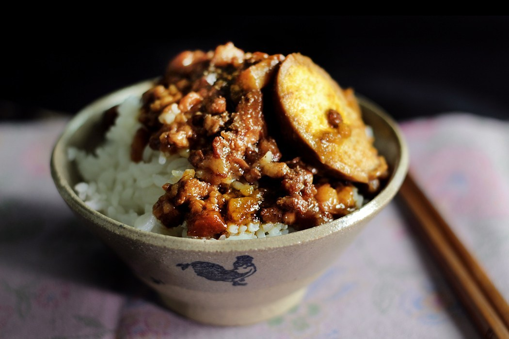
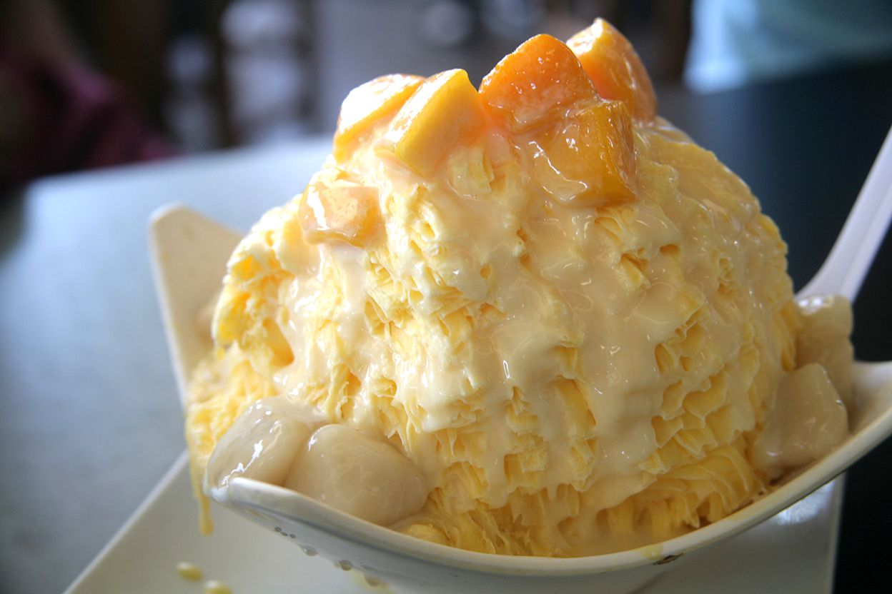
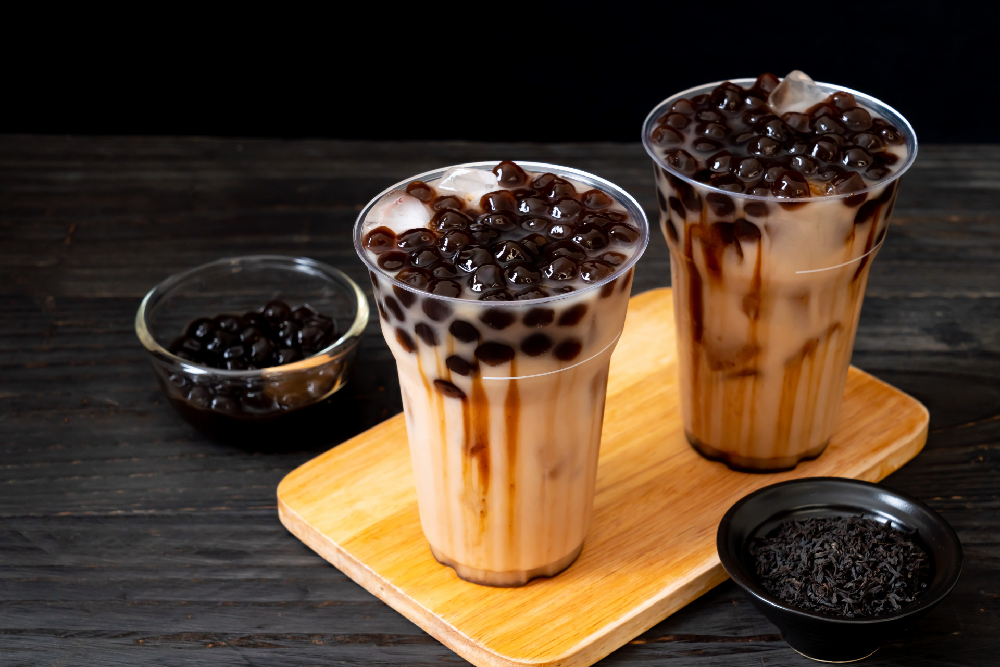

IT'S ALL THERE: FOOD, RED LANTERNS, ONSEN, AND MORE
Fans of Studio Ghibli movies and Hayao Miyazaki will certainly want to visit Jiufen – the location that was Miyazaki’s inspiration for Spirited Away. Even those who are not familiar with the movie however will certainly fall in love with quaint, quirky Jiufen. Where locals sip tea in colonial tea rooms that overlook the sea, where traditional lanterns gently dance in the breeze and where you could spend an entire day getting lost among winding, labyrinth style alleyways, to travel to Jiufen is like stepping back in time or into a fairytale and this area almost feels like a completely different country to busy, hectic Taipei.
Read MoreLet The Food Marathon Begin!
-

lu rou fan (pork braised rice)
Taiwanese comfort food at its best. Melt in the mouth pork braised in a gorgeous thick sweet & savory sauce. So addictive you can’t stop eating.
-

Mango Shaved Ice
A beloved Taiwanese ice dessert, mango shaved ice is typically made by shaving mango-flavored ice into a bowl and serving the ice shavings with fresh mango cubes and condensed milk.
-
Pork Belly Buns (Gua Bao)
Braised pork belly, pickled greens, coriander and powdered peanuts, all wrapped in a soft steamed bun.Just one bite is needed for an explosion of flavor and texture in your mouth.
-

Boba Tea
If there is one thing you cannot miss out on in Taiwan, it’s bubble tea. Hundreds – or even thousands – of bubble tea stalls line the metro with unique flavours and sometimes questionable concoctions.
-

XXL fried chicken cutlet
A favorite between-meals snack for us,the Taiwanese know their fried chicken really well! Originating from Taipei’s night markets, this hugeass crispy chicken-ey snack is generously coated with sweet and spicy seasonings!